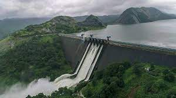
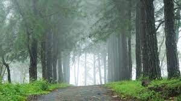
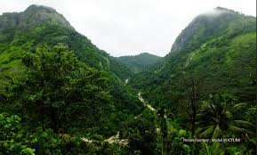

Idukki district is a densely forested, mountainous region in the south Indian state of Kerala. In the north, Anamudi mountain towers over Eravikulam National Park, where the rare, blue Neelakurinji flower blooms every 12 years. Nearby, Munnar is a hill station known for its sprawling tea plantations and Tea Museum. Farther south is the vast, curved Idukki Dam and Periyar National Park, a tiger and elephant reserve. ― Google
Area: 4,612
Population: 10.9 lakhs (2018)
Founded: 1972
Elevation: 1,200 m (3,900 ft)
HDI (2005): 0.754 (High)
Headquarters:Painavu
ISO 3166 code: IN-KL
|  |  |  | |
| Mullaperiyar Dam | Vagamon | Wildlife Sanctuary | Deivamatha Church |